<title>Очереди аккаунтов</title>
<meta name="claude:viewport-fit-sides" content="cover">
<link rel="stylesheet" href="https://fonts.googleapis.com/css2?family=Inter:wght@400;500;600&family=Space+Grotesk:wght@500;600&family=JetBrains+Mono:wght@400;500&display=swap">
<style>
:root {
  --bg: #f6f5f1; --card: #ffffff; --fg: #1c211f; --muted: #66706b; --line: #d9d8d0; --soft: #eceae3;
  --accent: #1f7a63; --accent-soft: #dcefe8; --new: #b8590f; --new-soft: #fbe9d7; --bad: #b3362b; --bad-soft: #f7e1de; --code: #f0eee7;
}
@media (prefers-color-scheme: dark) { :root:not([data-theme="light"]) {
  --bg: #151917; --card: #1d2320; --fg: #e8ece9; --muted: #98a39d; --line: #343c38; --soft: #252c28;
  --accent: #5fc3a6; --accent-soft: #1d3a31; --new: #f0a25c; --new-soft: #40291a; --bad: #ef8a80; --bad-soft: #43221f; --code: #232a26; color-scheme: dark } }
:root[data-theme="dark"] {
  --bg: #151917; --card: #1d2320; --fg: #e8ece9; --muted: #98a39d; --line: #343c38; --soft: #252c28;
  --accent: #5fc3a6; --accent-soft: #1d3a31; --new: #f0a25c; --new-soft: #40291a; --bad: #ef8a80; --bad-soft: #43221f; --code: #232a26; color-scheme: dark }
body { background: var(--bg); color: var(--fg); font: 15px/1.5 Inter, system-ui, sans-serif; padding-left: max(16px, env(safe-area-inset-left, 0px)); padding-right: max(16px, env(safe-area-inset-right, 0px)); padding-block: 28px 64px; }
main { max-width: 1040px; margin: 0 auto; display: flex; flex-direction: column; gap: 36px; }
h1, h2 { font-family: "Space Grotesk", Inter, sans-serif; text-wrap: balance; margin: 0; }
h1 { font-size: 34px; line-height: 1.1; }
h2 { font-size: 21px; }
.lead { color: var(--muted); max-width: 62ch; margin: 8px 0 0; }
section { display: flex; flex-direction: column; gap: 14px; border-radius: 14px; }
section.read > h2::after { content: " ✓ прочитал"; font: 500 12px Inter, sans-serif; color: var(--accent); }
.card { background: var(--card); border: 1px solid var(--line); border-radius: 14px; padding: 16px; min-width: 0; }
.dia { overflow-x: auto; }
.dia svg { display: block; min-width: 720px; width: 100%; height: auto; }
.dia text { font: 500 13px Inter, sans-serif; fill: var(--fg); }
.dia text.s { font-size: 11.5px; fill: var(--muted); font-weight: 400; }
.dia text.m { font: 500 11.5px "JetBrains Mono", monospace; }
.n rect { fill: var(--card); stroke: var(--line); stroke-width: 1.5; }
.n.new rect { fill: var(--new-soft); stroke: var(--new); }
.n.own rect { fill: var(--accent-soft); stroke: var(--accent); }
.a path, .a line { stroke: var(--muted); stroke-width: 1.6; fill: none; }
.a.new path, .a.new line { stroke: var(--new); }
.a text { fill: var(--muted); }
.a.new text { fill: var(--new); }
[data-i] { cursor: pointer; }
[data-i]:hover rect, [data-i].on rect { stroke-width: 2.6; }
[data-i]:hover path, [data-i]:hover line, [data-i].on path, [data-i].on line { stroke-width: 3; }
.say { border-left: 3px solid var(--accent); background: var(--soft); border-radius: 0 10px 10px 0; padding: 10px 14px; min-height: 44px; }
.say b { font-weight: 600; }
.say pre { margin: 8px 0 0; }
pre { font: 12.5px/1.45 "JetBrains Mono", monospace; background: var(--code); border-radius: 8px; padding: 10px 12px; overflow-x: auto; }
.legend { display: flex; gap: 16px; flex-wrap: wrap; font-size: 12.5px; color: var(--muted); }
.legend i { display: inline-block; width: 12px; height: 12px; border-radius: 3px; margin-right: 6px; vertical-align: -1px; border: 1.5px solid var(--line); background: var(--card); }
.legend i.new { background: var(--new-soft); border-color: var(--new); }
.legend i.own { background: var(--accent-soft); border-color: var(--accent); }
.grid { display: grid; grid-template-columns: repeat(auto-fit, minmax(230px, 1fr)); gap: 12px; }
.tile b { display: block; font: 600 26px "Space Grotesk", sans-serif; }
.tile span { color: var(--muted); font-size: 13px; }
.tile code { display: block; margin-top: 8px; font: 11.5px "JetBrains Mono", monospace; color: var(--muted); overflow-wrap: anywhere; }
.shots { display: grid; grid-template-columns: repeat(auto-fit, minmax(280px, 1fr)); gap: 12px; align-items: start; }
.shots figure { margin: 0; }
.shots img { width: 100%; border: 1px solid var(--line); border-radius: 10px; display: block; }
.shots figure.ph img { max-width: 260px; }
.shots figcaption { font-size: 12.5px; color: var(--muted); margin-top: 6px; }
.et { display: grid; grid-template-columns: minmax(0, 1fr) 28px minmax(0, 1fr); gap: 8px; align-items: center; padding: 10px 0; border-top: 1px solid var(--line); }
.et:first-child { border-top: 0; }
.et .in, .et .out { font-size: 13.5px; border-radius: 8px; padding: 8px 10px; background: var(--soft); min-width: 0; overflow-wrap: anywhere; }
.et .out { background: var(--accent-soft); }
.et .ar { text-align: center; color: var(--muted); }
.et small { display: block; color: var(--muted); font-size: 11.5px; }
.gate { font: 13px/1.7 "JetBrains Mono", monospace; white-space: pre-wrap; overflow-wrap: anywhere; }
.fork { display: grid; grid-template-columns: repeat(auto-fit, minmax(200px, 1fr)); gap: 10px; }
.fork div { border-radius: 10px; padding: 10px 12px; border: 1px solid var(--line); font-size: 13.5px; }
.fork .rec { border-color: var(--accent); background: var(--accent-soft); }
.fork small { display: block; color: var(--muted); font-size: 11.5px; text-transform: uppercase; letter-spacing: .05em; }
.steps { display: flex; flex-direction: column; gap: 10px; counter-reset: st; }
.steps .card { display: grid; grid-template-columns: 34px minmax(0, 1fr); gap: 4px 12px; }
.steps .card::before { counter-increment: st; content: counter(st); font: 600 20px "Space Grotesk", sans-serif; color: var(--accent); grid-row: span 2; }
.steps .done { font-size: 13px; color: var(--muted); }
.steps .done b { color: var(--accent); font-weight: 600; }
@media (max-width: 520px) { h1 { font-size: 27px; } .et { grid-template-columns: 1fr; } .et .ar { display: none; } }
</style>

<main>
<header>
  <h1>Очереди аккаунтов</h1>
  <p class="lead">На машине — сколько угодно именованных очередей аккаунтов Claude. Сессия стоит в очереди; очередь сама меняет аккаунт, когда тот подходит к лимиту. Работа: большая — меняет договор аккаунтов.</p>
</header>

<section id="b-map" data-block>
  <h2>Машина: входы, очереди, сессии</h2>
  <div class="legend"><span><i class="new"></i>новое</span><span><i class="own"></i>уже есть, получает работу</span><span><i></i>без изменений</span><span>нажмите на блок или стрелку</span></div>
  <div class="card dia">
    <svg viewBox="0 0 980 400" role="img" aria-label="Схема машины: слева входы Claude, посередине очереди, справа сессии">
      <defs><marker id="ah" viewBox="0 0 10 10" refX="9" refY="5" markerWidth="7" markerHeight="7" orient="auto-start-reverse"><path d="M0 0L10 5L0 10z" fill="context-stroke"/></marker></defs>
      <g data-i="logins"><text x="20" y="28">Входы Claude</text></g>
      <g class="n" data-i="l1"><rect x="20" y="50" width="200" height="56" rx="10"/><text x="120" y="74" text-anchor="middle">yuri@example.com</text><text class="s" x="120" y="93" text-anchor="middle">5 ч 46% · неделя 38%</text></g>
      <g class="n" data-i="l2"><rect x="20" y="150" width="200" height="56" rx="10"/><text x="120" y="174" text-anchor="middle">work@example.com</text><text class="s" x="120" y="193" text-anchor="middle">5 ч 12% · неделя 20%</text></g>
      <g class="n" data-i="l3"><rect x="20" y="250" width="200" height="56" rx="10"/><text x="120" y="274" text-anchor="middle">night@example.com</text><text class="s" x="120" y="293" text-anchor="middle">вне очередей</text></g>

      <text x="390" y="28">Очереди</text>
      <g class="n new" data-i="qmain"><rect x="390" y="50" width="200" height="72" rx="10"/><text class="m" x="490" y="76" text-anchor="middle">main</text><text class="s" x="490" y="96" text-anchor="middle">сейчас yuri@ · запас work@</text><text class="s" x="490" y="112" text-anchor="middle">4 сессии</text></g>
      <g class="n new" data-i="qreview"><rect x="390" y="150" width="200" height="72" rx="10"/><text class="m" x="490" y="176" text-anchor="middle">review</text><text class="s" x="490" y="196" text-anchor="middle">сейчас work@ · запас yuri@</text><text class="s" x="490" y="212" text-anchor="middle">1 сессия</text></g>
      <g class="n" data-i="key"><rect x="390" y="290" width="200" height="56" rx="10"/><text x="490" y="314" text-anchor="middle">ключ флота orca-glm</text><text class="s" x="490" y="333" text-anchor="middle">другой провайдер</text></g>

      <text x="770" y="28">Сессии</text>
      <g class="n" data-i="s1"><rect x="770" y="50" width="190" height="72" rx="10"/><text x="865" y="76" text-anchor="middle">site · docs · billing · lead</text><text class="s m" x="865" y="98" text-anchor="middle">slot: "main"</text></g>
      <g class="n" data-i="s2"><rect x="770" y="150" width="190" height="72" rx="10"/><text x="865" y="176" text-anchor="middle">reviewer</text><text class="s m" x="865" y="198" text-anchor="middle">slot: "review"</text></g>
      <g class="n" data-i="s3"><rect x="770" y="290" width="190" height="56" rx="10"/><text x="865" y="314" text-anchor="middle">glm-check</text><text class="s m" x="865" y="333" text-anchor="middle">slot: "orca-glm"</text></g>

      <g class="a new" data-i="a-link"><path d="M390 78 L222 78" marker-end="url(#ah)"/><text x="262" y="70">стоит сейчас</text></g>
      <g class="a new" data-i="a-link"><path d="M390 186 L222 180" marker-end="url(#ah)"/></g>
      <g class="a" data-i="a-in1"><path d="M390 104 C320 110 300 160 222 166" stroke-dasharray="5 5" marker-end="url(#ah)"/><text x="268" y="132">запас</text></g>
      <g class="a" data-i="a-in1"><path d="M390 204 C330 190 300 104 222 96" stroke-dasharray="5 5" marker-end="url(#ah)"/></g>
      <g class="a new" data-i="a-s1"><path d="M770 86 L592 86" marker-end="url(#ah)"/><text x="632" y="78">поле slot</text></g>
      <g class="a new" data-i="a-s1"><path d="M770 186 L592 186" marker-end="url(#ah)"/></g>
      <g class="a" data-i="a-s1"><path d="M770 318 L592 318" marker-end="url(#ah)"/></g>
    </svg>
  </div>
  <div class="say" aria-live="polite">Нажмите на блок или стрелку — здесь появится пояснение.</div>
</section>

<section id="b-contract" data-block>
  <h2>Кто кого о чём просит</h2>
  <div class="card dia">
    <svg viewBox="0 0 980 300" role="img" aria-label="Схема запросов: страница и агенты просят модуль аккаунтов Host, Host узнаёт лимиты у Claude">
      <g class="n" data-i="page"><rect x="20" y="110" width="190" height="72" rx="10"/><text x="115" y="140" text-anchor="middle">Страница и агенты</text><text class="s" x="115" y="160" text-anchor="middle">экран и инструменты</text></g>
      <g class="n own" data-i="host"><rect x="560" y="90" width="200" height="112" rx="10"/><text x="660" y="136" text-anchor="middle">Host машины</text><text class="s" x="660" y="156" text-anchor="middle">хозяин очередей</text></g>
      <g class="n" data-i="claude"><rect x="840" y="110" width="120" height="72" rx="10"/><text x="900" y="150" text-anchor="middle">Claude</text></g>
      <g class="a new" data-i="c-list"><path d="M210 122 C330 60 450 60 560 104" marker-end="url(#ah)"/><text class="m" x="300" y="62">account.list → accounts, slots</text></g>
      <g class="a new" data-i="c-set"><path d="M210 138 L560 132" marker-end="url(#ah)"/><text class="m" x="300" y="126">slot.set { slot, order }</text></g>
      <g class="a new" data-i="c-swap"><path d="M210 156 L560 160" marker-end="url(#ah)"/><text class="m" x="300" y="176">slot.swap { slot, account? }</text></g>
      <g class="a new" data-i="c-doc"><path d="M210 172 C330 250 450 250 560 190" marker-end="url(#ah)"/><text class="m" x="270" y="252">session.open · session.update { slot: очередь }</text></g>
      <g class="a" data-i="c-lim"><path d="M840 146 L762 146" marker-end="url(#ah)"/><text x="770" y="134">лимиты</text></g>
    </svg>
  </div>
  <div class="say" aria-live="polite">Нажмите на блок или стрелку — здесь появится пояснение; у запроса — пример.</div>
</section>

<section id="b-flow" data-block>
  <h2>Смена аккаунта — у каждой очереди своя</h2>
  <div class="card dia">
    <svg viewBox="0 0 980 350" role="img" aria-label="Шаги смены аккаунта очереди слева направо; внизу — одна линия изменений машины, пределы шагов и остановка Host">
      <g class="n" data-i="r1"><rect x="20" y="40" width="150" height="70" rx="10"/><text x="95" y="68" text-anchor="middle">Аккаунт у порога</text><text class="s" x="95" y="88" text-anchor="middle">или отказ Claude</text></g>
      <g class="n new" data-i="r2"><rect x="220" y="40" width="170" height="70" rx="10"/><text x="305" y="68" text-anchor="middle">Очереди, где он</text><text x="305" y="88" text-anchor="middle">стоит сейчас</text></g>
      <g class="n own" data-i="r3"><rect x="440" y="40" width="150" height="70" rx="10"/><text x="515" y="68" text-anchor="middle">Следующий годный</text><text class="s" x="515" y="88" text-anchor="middle">по порядку очереди</text></g>
      <g class="n own" data-i="r4"><rect x="640" y="40" width="150" height="70" rx="10"/><text x="715" y="68" text-anchor="middle">Сессии очереди</text><text x="715" y="88" text-anchor="middle">продолжают</text></g>
      <g class="n own" data-i="r5"><rect x="440" y="160" width="150" height="70" rx="10"/><text x="515" y="188" text-anchor="middle">Запаса нет —</text><text x="515" y="208" text-anchor="middle">очередь ждёт сброса</text></g>
      <g class="n own" data-i="r6"><rect x="640" y="160" width="150" height="70" rx="10"/><text x="715" y="188" text-anchor="middle">Час сброса</text><text class="s" x="715" y="208" text-anchor="middle">одна побудка на машину</text></g>
      <g class="a" data-i="r2"><path d="M170 75 L218 75" marker-end="url(#ah)"/></g>
      <g class="a" data-i="r3"><path d="M390 75 L438 75" marker-end="url(#ah)"/></g>
      <g class="a" data-i="r4"><path d="M590 75 L638 75" marker-end="url(#ah)"/></g>
      <g class="a" data-i="r5"><path d="M515 110 L515 158" marker-end="url(#ah)"/><text x="524" y="140">никого</text></g>
      <g class="a" data-i="r6"><path d="M590 195 L638 195" marker-end="url(#ah)"/></g>
      <g class="a" data-i="r4"><path d="M715 160 L715 112" marker-end="url(#ah)"/></g>
      <text class="s" x="830" y="70">остальные очереди</text><text class="s" x="830" y="88">машины работают</text><text class="s" x="830" y="106">как работали</text>
      <g class="n own" data-i="f-line"><rect x="20" y="270" width="290" height="62" rx="10"/><text x="165" y="296" text-anchor="middle">Одна линия изменений на машину</text><text class="s" x="165" y="316" text-anchor="middle">смена в каждой очереди — свой шаг</text></g>
      <g class="n own" data-i="f-lim"><rect x="345" y="270" width="290" height="62" rx="10"/><text x="490" y="296" text-anchor="middle">У каждого шага — предел</text><text class="s" x="490" y="316" text-anchor="middle">вышел — отказ словом, очередь как была</text></g>
      <g class="n own" data-i="f-stop"><rect x="670" y="270" width="290" height="62" rx="10"/><text x="815" y="296" text-anchor="middle">Остановка Host</text><text class="s" x="815" y="316" text-anchor="middle">шаг доведён, остальным — отказ</text></g>
      <g class="a" data-i="f-lim"><path d="M310 301 L343 301" marker-end="url(#ah)"/></g>
      <g class="a" data-i="f-stop"><path d="M635 301 L668 301" marker-end="url(#ah)"/></g>
    </svg>
  </div>
  <div class="say" aria-live="polite">Нажмите на шаг — здесь появится пояснение.</div>
</section>

<section id="b-open" data-block>
  <h2>Открытие сессии: в какую очередь</h2>
  <div class="card dia">
    <svg viewBox="0 0 980 300" role="img" aria-label="Дерево решения: что названо в запросе и куда встаёт сессия">
      <g class="n" data-i="o0"><rect x="20" y="118" width="150" height="64" rx="10"/><text x="95" y="146" text-anchor="middle">Открыть сессию</text><text class="s m" x="95" y="166" text-anchor="middle">slot: ?</text></g>
      <g class="n new" data-i="o1"><rect x="300" y="10" width="280" height="40" rx="10"/><text x="440" y="35" text-anchor="middle">названа очередь → в неё</text></g>
      <g class="n" data-i="o2"><rect x="300" y="58" width="280" height="40" rx="10"/><text x="440" y="83" text-anchor="middle">назван ключ флота → на ключ</text></g>
      <g class="n new" data-i="o3"><rect x="300" y="106" width="280" height="40" rx="10"/><text x="440" y="131" text-anchor="middle">не названо, очередь одна → в неё</text></g>
      <g class="n new" data-i="o4"><rect x="300" y="154" width="280" height="40" rx="10"/><text x="440" y="179" text-anchor="middle">не названо, очередей несколько</text></g>
      <g class="n" data-i="o5"><rect x="300" y="202" width="280" height="40" rx="10"/><text x="440" y="227" text-anchor="middle">не названо, очередей нет</text></g>
      <g class="n new" data-i="o6"><rect x="300" y="250" width="280" height="40" rx="10"/><text x="440" y="275" text-anchor="middle">названа почта или чужое имя</text></g>
      <g class="a" data-i="o1"><path d="M170 140 C230 130 240 34 298 30" marker-end="url(#ah)"/></g>
      <g class="a" data-i="o2"><path d="M170 144 C230 138 240 80 298 78" marker-end="url(#ah)"/></g>
      <g class="a" data-i="o3"><path d="M170 148 L298 128" marker-end="url(#ah)"/></g>
      <g class="a" data-i="o4"><path d="M170 152 L298 172" marker-end="url(#ah)"/></g>
      <g class="a" data-i="o5"><path d="M170 156 C230 166 240 220 298 222" marker-end="url(#ah)"/></g>
      <g class="a" data-i="o6"><path d="M170 160 C230 172 240 266 298 270" marker-end="url(#ah)"/></g>
      <text class="m" x="610" y="179" style="fill: var(--bad)">отказ slot_required</text>
      <text class="m" x="610" y="227" style="fill: var(--bad)">отказ not_logged_in</text>
      <text class="m" x="610" y="275" style="fill: var(--bad)">отказ no_slot</text>
      <text class="s" x="610" y="35">сессия идёт</text><text class="s" x="610" y="83">сессия идёт</text><text class="s" x="610" y="131">сессия идёт</text>
    </svg>
  </div>
  <div class="say" aria-live="polite">Нажмите на ветку — здесь появится пояснение.</div>
</section>

<section id="b-shots" data-block>
  <h2>Как это выглядит — снимки живого прототипа</h2>
  <div class="shots">
    <figure>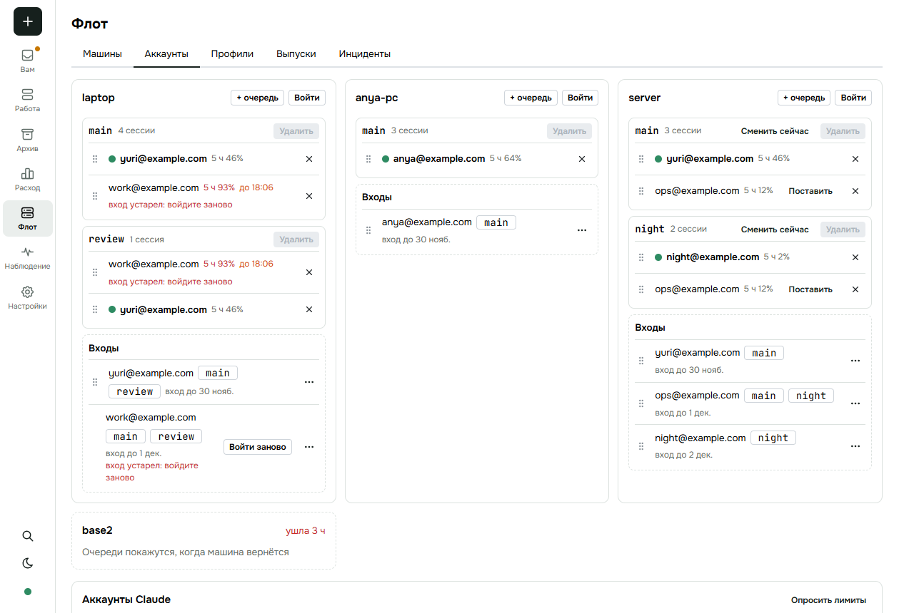<figcaption>«Флот → Аккаунты»: очереди машины и её входы</figcaption></figure>
    <figure>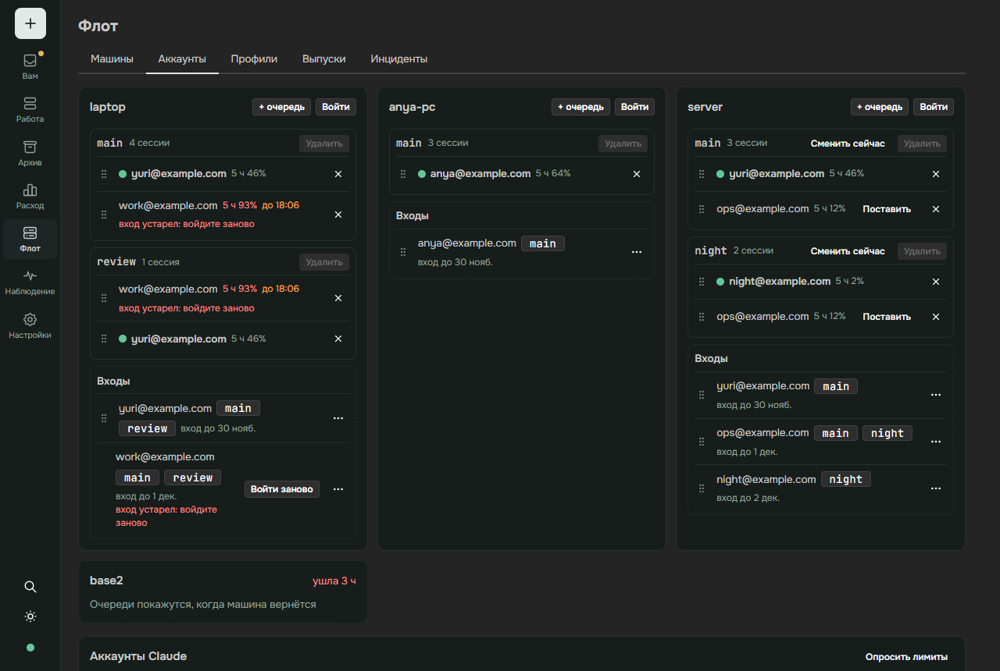<figcaption>Тёмная тема</figcaption></figure>
    <figure>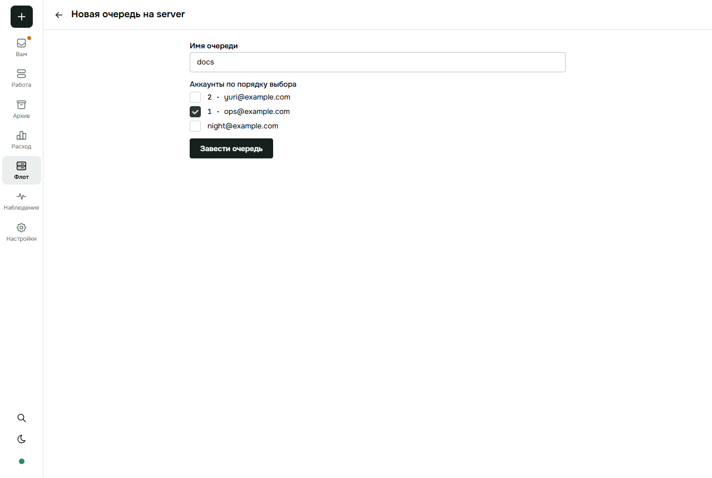<figcaption>«+ очередь» — страница шага</figcaption></figure>
    <figure>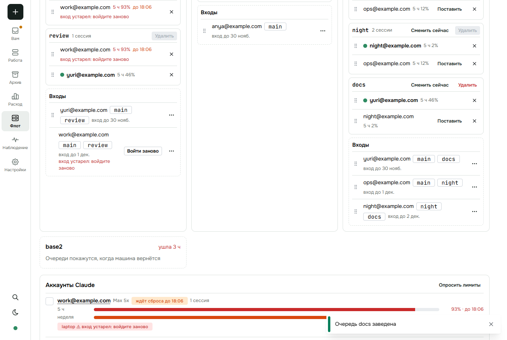<figcaption>Перенос аккаунта между очередями</figcaption></figure>
    <figure>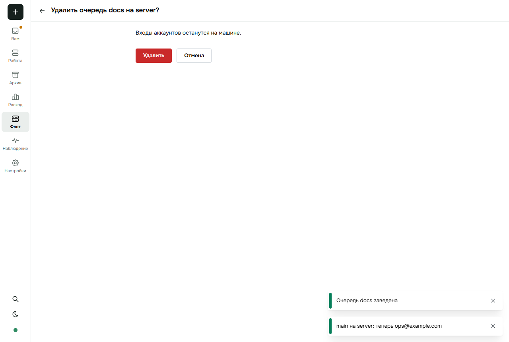<figcaption>Удаление очереди — страница подтверждения</figcaption></figure>
    <figure>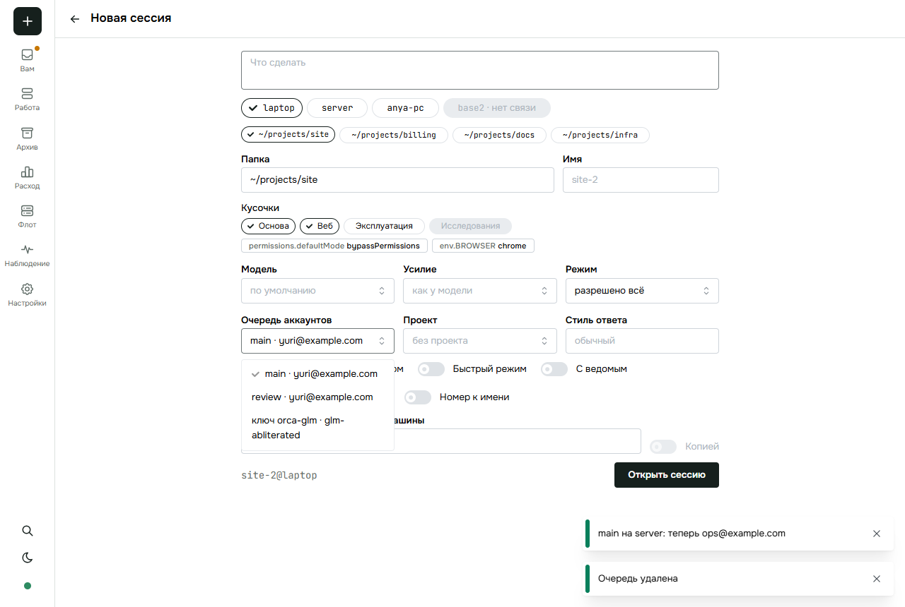<figcaption>«Новая сессия»: очередь или ключ</figcaption></figure>
    <figure>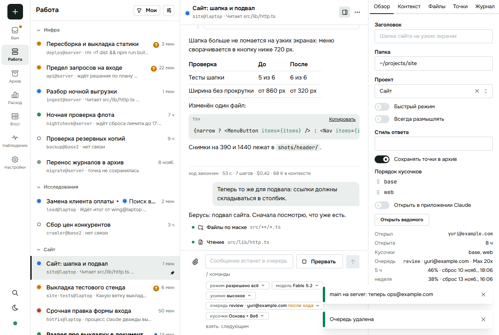<figcaption>Чип «очередь» под полем ввода</figcaption></figure>
    <figure class="ph">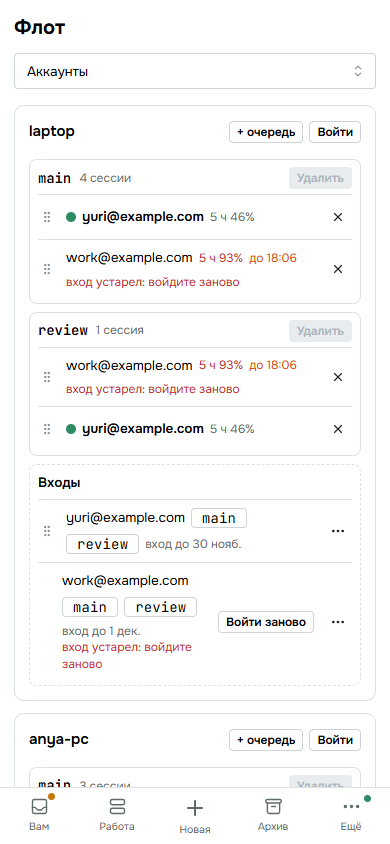<figcaption>Телефон</figcaption></figure>
    <figure class="ph">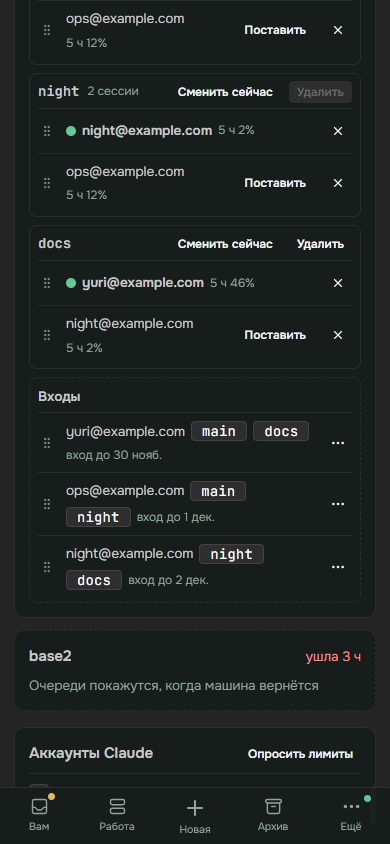<figcaption>Перенос пальцем · тёмная</figcaption></figure>
    <figure class="ph">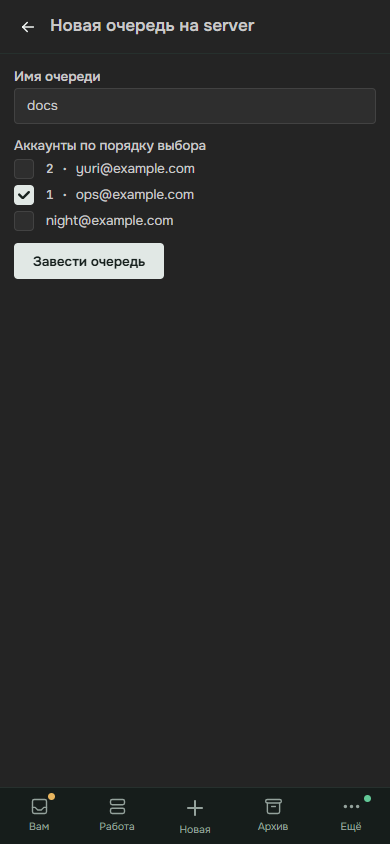<figcaption>Новая очередь · тёмная</figcaption></figure>
    <figure class="ph">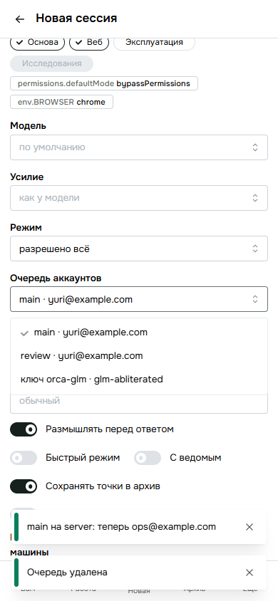<figcaption>Новая сессия</figcaption></figure>
    <figure class="ph">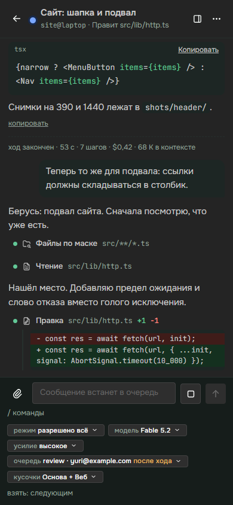<figcaption>Чип очереди · тёмная</figcaption></figure>
  </div>
</section>

<section id="b-etalons" data-block>
  <h2>Эталоны — чем проверяем</h2>
  <div class="card">
    <div class="et"><div class="in">main стоит на yuri@, review — на work@; в каждой по сессии<small>слово пользователя: несколько очередей</small></div><div class="ar">→</div><div class="out">сессия main идёт со входом yuri@, сессия review — со входом work@, одновременно</div></div>
    <div class="et"><div class="in">yuri@ стоит сейчас в main и в docs; его окно «5 ч» дошло до порога, о пороге сообщили сессии обеих очередей<small>чьё: код — смена по порогу</small></div><div class="ar">→</div><div class="out">main и docs перешли на своих следующих — по одной смене на очередь; review, где yuri@ запасной, не тронута</div></div>
    <div class="et"><div class="in">в review один work@, он у порога; main стоит на yuri@<small>чьё: код — ожидание сброса</small></div><div class="ar">→</div><div class="out">review ждёт сброса, её сессии стоят с часом сброса; сессии main идут</div></div>
    <div class="et"><div class="in">час сброса review; у её сессии ход оборван отказом<small>чьё: код — «Продолжай» после сброса</small></div><div class="ar">→</div><div class="out">сессия review получает «Продолжай»; сессиям main ничего не шлётся</div></div>
    <div class="et"><div class="in">открытие без очереди: на машине одна · две · ни одной<small>слово пользователя: как в старой</small></div><div class="ar">→</div><div class="out">в неё, её имя записано в документ · отказ slot_required с именами очередей · отказ not_logged_in</div></div>
    <div class="et"><div class="in">slot.set с новым именем · с пустым порядком · с пустым порядком при сессиях<small>слово пользователя: как в старой</small></div><div class="ar">→</div><div class="out">очередь заведена · удалена · отказ has_sessions</div></div>
    <div class="et"><div class="in">первый вход на машине без очередей<small>слово пользователя: как в старой</small></div><div class="ar">→</div><div class="out">заведена очередь main с этим аккаунтом</div></div>
    <div class="et"><div class="in">в документе сессии почта вместо очереди<small>решение дизайна: один способ вместо двух</small></div><div class="ar">→</div><div class="out">отказ no_slot, причина называет очереди машины</div></div>
    <div class="et"><div class="in">идущей сессии сменили очередь main → review<small>чьё: код — новый аккаунт с новым процессом</small></div><div class="ar">→</div><div class="out">процесс перезапущен со входом review, разговор тот же</div></div>
    <div class="et"><div class="in">аккаунт убирают с машины; он стоит сейчас в main, запас есть<small>чьё: код — удаление аккаунта</small></div><div class="ar">→</div><div class="out">main перешла на следующего, аккаунт ушёл из всех очередей, очередь без аккаунтов и сессий исчезла; запаса нет и есть сессии — отказ no_reserve, ни одна очередь не тронута</div></div>
    <div class="et"><div class="in">Host останавливается, пока main и docs меняют аккаунт<small>чьё: код — отказ shutting_down; устав — штатная остановка</small></div><div class="ar">→</div><div class="out">начатая смена main доведена, docs — отказ shutting_down; после запуска очереди стоят по ссылкам на диске, docs сменится по следующему сообщению о лимите</div></div>
    <div class="et"><div class="in">страница: аккаунт из входов — в очередь; из очереди — в другую; тот же порядок<small>проверено тестом прототипа</small></div><div class="ar">→</div><div class="out">добавлен в конец · ушёл из первой и встал во вторую · запросов нет</div></div>
  </div>
</section>

<section id="b-forks" data-block>
  <h2>Развилки вам</h2>
  <div class="card"><b>Сессия на одном конкретном аккаунте</b>
    <div class="fork" style="margin-top:10px"><div class="rec"><small>рекомендую</small>очередь из одного аккаунта — как в старой; закрепления за почтой нет</div><div><small>иначе</small>оставить и закрепление за почтой вторым способом</div><div><small>не скажете иначе</small>очередь из одного аккаунта</div></div>
  </div>
  <div class="card"><b>«Вернуть в очереди» пачкой для выбранных аккаунтов</b>
    <div class="fork" style="margin-top:10px"><div class="rec"><small>рекомендую</small>убрать: с несколькими очередями неясно, в какую; «Убрать из очередей» остаётся</div><div><small>иначе</small>возвращать в main каждой машины</div><div><small>не скажете иначе</small>убираю</div></div>
  </div>
</section>

<section id="b-gate" data-block>
  <h2>Гейт</h2>
  <div class="card gate">Гейт (42 строки реестров): дубликаты ответственности 0 → 0 · состояния 0 → 0 · логики 0 → 0 · смысла 4 → 0 · других 2 → 0 · лишние коммуникации 1 → 0 · циклы 0 → 0
Числа: запросы 0 новых (slot.set, slot.swap, account.list — те же) · поля договора +8 (slot ×2, slots и пять полей очереди), −2 (место и «стоит сейчас» у аккаунта), 3 переименованы (account → slot в документе сессии, в подъёме из архива, в правиле вида обращений) · значения поля документа 3 → 2 · слова отказа +2 (slot_required, no_slot) · кадры 0 · каналы 0 · секреты 0 · настройки 0 · побудки на машину N → 1 · ожидаемые ветки сбоев 0 новых · эталоны 12
Работа: большая — меняет договор аккаунтов
Сделано:
  1. Юнификация · закрепление сессии за аккаунтом · один способ — очередь (из одного аккаунта тоже очередь); выбор «почта» в документе сессии уходит · выигрыш: способов 2 → 1, значений поля 3 → 2
  2. Одно имя — один смысл · account и login · account везде — аккаунт (почта или ключ): в ответах, в slot.swap, в строке сессии; очередь сессии в документе — поле slot, как у slot.set и slot.swap; login остаётся только номером попытки входа · выигрыш: смыслов account 2 → 1, login 2 → 1, строка сессии без правок
  3. Одно имя — один смысл · slot · остаётся очередь, порядок хранит она; места аккаунта числом нет · выигрыш: смыслов 2 → 1, полей аккаунта −2
  4. Одно имя — один смысл · очередь · очередь есть, пока в ней есть аккаунт: пустой порядок, удаление последнего аккаунта — очереди нет; «пустой очереди» как состояния нет · выигрыш: состояний очереди 2 → 1
  5. Удаление раньше добавления · name_taken · проверка имени очереди по ключам флота убрана: закрывала одну сторону из двух и требовала запроса Host к службе ключей на каждую новую очередь; остаётся одно правило — имя сначала ищется среди очередей машины, потом среди ключей · выигрыш: слов отказа −1, обменов −1
  6. Юнификация · побудка · одна на машину — на ближайший сброс среди ждущих очередей; лимиты аккаунта записаны один раз, очереди их только читают · выигрыш: таймеров N → 1, копий лимитов 0
  7. Лимит и остановка · линия изменений · одна на машину; смена в каждой очереди — свой шаг с проверкой «очередь всё ещё на этом аккаунте»; остановка Host: шаг доведён, остальным shutting_down, после запуска — с диска · выигрыш: гонок смен 0, шагов без предела 0
  8. Явное · открытие без очереди · имя единственной очереди записывается в документ: вторая очередь, заведённая позже, сессию без имени не оставит · выигрыш: документов без очереди 0
  9. Less is More · запросы · очереди заводит, меняет и удаляет один slot.set; новых запросов нет · выигрыш: запросов +0
  10. Простые коммуникации · страница · аккаунты и очереди машины — один ответ account.list, перенос — slot.set на каждую изменённую очередь · выигрыш: опросов на машину 1
Проверено и оставлено: слово интерфейса «очередь» и имя договора slot — перевод, а не второе понятие; счёт сессий у аккаунта и у очереди — два разных счёта, оба считает Host; «ждёт сброса» у очереди и у строки сессии — один расчёт Host, нигде не записан.
Не трогал как редакторское: слова кнопок, порядок карточек на экране.
Слепой архитектор: пройден, правки внесены.</div>
</section>

<section id="b-order" data-block>
  <h2>Порядок реализации</h2>
  <div class="steps">
    <div class="card"><div><b>Договор.</b> Очередь в ответе account.list, поле slot у slot.set и slot.swap, место и «стоит сейчас» у аккаунта уходят, поле документа сессии slot (и в подъёме из архива, и в правиле вида обращений).</div><div class="done">Готово: <b>тесты договора 9 → 10</b>, гейт имён чист.</div></div>
    <div class="card"><div><b>Host, модуль аккаунтов.</b> Запись «очереди → порядок», ссылка на диске у каждой очереди, смена по порогу и ожидание сброса на очередь одной линией и одной побудкой машины, открытие без очереди, удаление аккаунта и очереди.</div><div class="done">Готово: <b>тесты Host 77 → 88</b> — одиннадцать эталонов сверху (оценка по их числу).</div></div>
    <div class="card"><div><b>Страница.</b> Экран очередей, форма «Новая сессия», чип под полем ввода, инспектор, подъём из архива — из прототипа.</div><div class="done">Готово: <b>тесты страницы 212 → 212</b> (три заменены на тесты очередей уже в прототипе), <b>сценарий в браузере 28 из 28</b> на 1280 и 390.</div></div>
    <div class="card"><div><b>Тестовый флот.</b> Кода переноса нет: агент переименовывает очередь auto в main в записях Host на обеих машинах; в документах сессий и в правилах видов обращений поле account становится slot со значением main (и там, где поля не было или стояла почта); затем выкладка.</div><div class="done">Готово: <b>живой прогон 6 шагов</b> — две очереди на машине, сессия в каждой, «Сменить сейчас» в одной, удаление пустой, отказ slot_required, открытие с очередью.</div></div>
  </div>
</section>
</main>

<script>
const INFO = {
 "logins": [
  "Входы Claude на машине",
  "Каждый вход — своя папка на диске машины. Вошли один раз — аккаунт можно поставить в любые очереди этой машины. Лимиты у аккаунта одни, сколько бы очередей им ни пользовалось."
 ],
 "l1": [
  "yuri@example.com",
  "Стоит в двух очередях: в main первым, в review запасным. Его окно «5 ч» расходуют сессии обеих очередей — страница показывает одно и то же число в каждой."
 ],
 "l2": [
  "work@example.com",
  "Первый в review, запасной в main."
 ],
 "l3": [
  "night@example.com",
  "Вошёл на машине, но ни в одной очереди не стоит: сессии на нём не идут, пока его не перетащат в очередь."
 ],
 "qmain": [
  "Очередь main",
  "Именованный порядок аккаунтов. Первый вход на машине без очередей заводит её сам. Сейчас в ней стоит yuri@: все её сессии идут на нём."
 ],
 "qreview": [
  "Очередь review",
  "Вторая очередь той же машины со своим порядком и своим текущим аккаунтом. Смена аккаунта в main её не трогает."
 ],
 "key": [
  "Ключ флота",
  "Не очередь: сессия на ключе идёт к другому провайдеру, лимитов Claude и ротации у неё нет. Как и раньше."
 ],
 "s1": [
  "Сессии очереди main",
  "В документе сессии записано имя очереди — на каком аккаунте она идёт сейчас, решает очередь. Сменился аккаунт очереди — сессии продолжают на новом без перезапуска."
 ],
 "s2": [
  "Сессии очереди review",
  "Те же правила, своя очередь."
 ],
 "s3": [
  "Сессия на ключе",
  "В документе — имя ключа флота."
 ],
 "a-in1": [
  "Порядок очереди",
  "Сплошная стрелка — кто стоит в очереди сейчас; пунктир — запасные по порядку. Порядок задаёт человек перетаскиванием."
 ],
 "a-s1": [
  "Сессия → очередь",
  "Одно поле документа сессии — slot: имя очереди машины или имя ключа флота. Имя сначала ищется среди очередей машины, потом среди ключей. На каком аккаунте сессия идёт сейчас, показывает поле account её строки. Закрепить сессию за одним аккаунтом — завести очередь из одного аккаунта: отдельного способа нет.",
  {
   "type": "session.open",
   "id": "r1",
   "to": "@laptop",
   "spec": {
    "name": "site",
    "cwd": "~/projects/site",
    "slot": "review"
   }
  },
  {
   "type": "reply",
   "id": "r1",
   "ok": true,
   "result": {
    "callsign": "site@laptop"
   }
  }
 ],
 "a-link": [
  "Очередь → аккаунт",
  "На диске машины у очереди — ссылка на папку входа текущего аккаунта. Процессы Claude читают вход через неё, поэтому смена аккаунта очереди — перестановка одной ссылки."
 ],
 "page": [
  "Страница и агенты",
  "«Флот → Аккаунты» у человека; те же запросы видны сессиям как инструменты: агент может завести очередь и сменить в ней аккаунт."
 ],
 "host": [
  "Host машины — модуль аккаунтов",
  "Единственный хозяин очередей: порядок хранит в своей записи, текущий аккаунт — ссылкой на диске, лимиты — в записи аккаунта, одной на все очереди. Все изменения всех очередей машины идут одной линией, по одному."
 ],
 "claude": [
  "Claude",
  "Говорит о лимитах в ответах сессиям и на опрос. По ним очередь решает, когда менять аккаунт."
 ],
 "c-list": [
  "account.list — аккаунты и очереди машины",
  "Один ответ: входы с лимитами (accounts) и очереди (slots). У очереди — имя, порядок, кто стоит сейчас (account), сколько на ней сессий и, если она ждёт сброса, его час (wait). Лимиты — только у аккаунта: очереди, где он стоит, читают одну запись. Места в очереди и пометки «стоит сейчас» у аккаунта больше нет — это знает очередь.",
  {
   "type": "account.list",
   "id": "r2",
   "to": "@laptop"
  },
  {
   "type": "reply",
   "id": "r2",
   "ok": true,
   "result": {
    "accounts": [
     {
      "id": "yuri@example.com",
      "kind": "claude",
      "ok": true,
      "limits": [
       {
        "name": "five_hour",
        "used": 0.46
       }
      ],
      "sessions": 4
     }
    ],
    "slots": [
     {
      "name": "main",
      "order": [
       "yuri@example.com",
       "work@example.com"
      ],
      "account": "yuri@example.com",
      "sessions": 4
     },
     {
      "name": "review",
      "order": [
       "work@example.com",
       "yuri@example.com"
      ],
      "account": "work@example.com",
      "sessions": 1
     }
    ]
   }
  }
 ],
 "c-set": [
  "slot.set — завести, изменить, удалить очередь",
  "Имени ещё нет — очередь заводится. Новый порядок — меняется. Пустой порядок — очередь удаляется, если на ней нет сессий: очередь есть, пока в ней есть аккаунт. Перенос аккаунта между очередями — два таких запроса.",
  {
   "type": "slot.set",
   "id": "r3",
   "to": "@laptop",
   "slot": "review",
   "order": [
    "work@example.com",
    "yuri@example.com"
   ]
  },
  {
   "type": "reply",
   "id": "r3",
   "ok": true,
   "result": {}
  }
 ],
 "c-swap": [
  "slot.swap — сменить аккаунт очереди сейчас",
  "Названный аккаунт или следующий годный по порядку — только в названной очереди.",
  {
   "type": "slot.swap",
   "id": "r4",
   "to": "@laptop",
   "slot": "main"
  },
  {
   "type": "reply",
   "id": "r4",
   "ok": true,
   "result": {
    "account": "work@example.com"
   }
  }
 ],
 "c-doc": [
  "session.open и session.update — очередь сессии",
  "Поле slot документа сессии — имя очереди или ключа. Смена очереди у идущей сессии перезапускает её процесс на новом аккаунте; разговор тот же.",
  {
   "type": "session.update",
   "id": "r5",
   "to": "site@laptop",
   "patch": {
    "slot": "review"
   }
  },
  {
   "type": "reply",
   "id": "r5",
   "ok": true,
   "result": {
    "now": [],
    "later": [
     "slot"
    ]
   }
  }
 ],
 "c-lim": [
  "Лимиты от Claude",
  "Окна лимитов приходят в ответах сессиям и по опросу. Записываются у аккаунта — одного на все очереди."
 ],
 "r1": [
  "Аккаунт подошёл к порогу",
  "Окно «5 ч» или «неделя» у аккаунта заполнилось до порога, либо Claude отказал. Об этом узнаёт любая сессия на нём."
 ],
 "r2": [
  "Какие очереди задеты",
  "Все очереди, где этот аккаунт стоит сейчас: смена в каждой — отдельный шаг общей линии машины. Шаг сначала смотрит, стоит ли очередь всё ещё на этом аккаунте: о пороге сообщают сессии всех очередей, но каждая очередь меняется один раз. Очереди, где он запасной или его нет, не трогаются."
 ],
 "r3": [
  "Следующий годный",
  "Каждая задетая очередь берёт следующего по своему порядку: вошедшего и ниже порога. Лимиты у аккаунта одни на все очереди; устарели — один опрос на аккаунт, вторая очередь ждёт тот же ответ."
 ],
 "r4": [
  "Сессии продолжают",
  "Ссылка очереди переставлена — сессии этой очереди идут дальше на новом аккаунте. Ход, оборванный отказом, получает «Продолжай»."
 ],
 "r5": [
  "Запаса нет — очередь ждёт",
  "Все аккаунты очереди у порога: очередь ждёт ближайшего сброса, её сессии стоят со строкой «ждёт сброса лимита». «Ждёт» нигде не записано — считается из порядка очереди и лимитов её аккаунтов. Очереди с другими аккаунтами работают; очереди из тех же аккаунтов ждут тот же час."
 ],
 "r6": [
  "Час сброса",
  "Побудка одна на машину — на ближайший сброс среди ждущих очередей. В этот час каждая ждущая очередь проверяется своим шагом линии: аккаунт снова годен — её оборванные ходы продолжаются; нет — побудка ставится на следующий сброс."
 ],
 "f-line": [
  "Одна линия изменений на машину",
  "Смена по порогу, «Сменить сейчас», новый порядок, удаление очереди и аккаунта, час сброса — все идут по одному, одной линией на всю машину, а не на очередь: аккаунт и его лимиты у очередей общие. Аккаунт стоит в трёх очередях — три шага подряд, у каждого своя проверка."
 ],
 "f-lim": [
  "У каждого шага — предел",
  "Опрос лимитов у Claude и ожидание блокировки файла входа ограничены по времени. Предел вышел — запрос получает отказ словом, смена по порогу — строку в журнале; очередь остаётся на прежнем аккаунте, повторов нет: следующее сообщение о лимите начнёт шаг заново."
 ],
 "f-stop": [
  "Остановка Host",
  "Новые изменения получают отказ shutting_down, идущий шаг доводится, побудка снимается, опросы лимитов закрываются. Сохранять нечего: порядок уже в записи, текущий аккаунт — ссылка на диске. После запуска очереди читаются с диска, побудка ставится заново; очередь, не успевшая смениться, сменится по следующему сообщению о лимите."
 ],
 "o0": [
  "Открыть сессию",
  "Запрос называет очередь или ключ в поле slot — или не называет ничего."
 ],
 "o1": [
  "Названа очередь",
  "Сессия встаёт в неё. У аккаунта, который стоит в очереди сейчас, нет входа — отказ словом not_logged_in."
 ],
 "o2": [
  "Назван ключ флота",
  "Сессия идёт на ключе, как раньше. Имя сначала ищется среди очередей машины, потом среди ключей флота: совпали — это очередь."
 ],
 "o3": [
  "Не названо, очередь одна",
  "Сессия встаёт в неё: на машине с одной очередью выбирать не из чего. В документ сессии записывается имя этой очереди — вторая очередь, заведённая позже, ничего для сессии не меняет."
 ],
 "o4": [
  "Не названо, очередей несколько",
  "Отказ slot_required, причина называет очереди машины. Страница очередь называет всегда, поэтому отказ видит только агент, забывший поле."
 ],
 "o5": [
  "Очередей нет",
  "Отказ not_logged_in: войдите в аккаунт или выберите ключ флота."
 ],
 "o6": [
  "Названа почта или неизвестное имя",
  "Ни очереди, ни ключа с таким именем нет — отказ no_slot, причина называет очереди машины. Закрепления за почтой нет."
 ]
};
for (const sec of document.querySelectorAll("section")) {
  const say = sec.querySelector(".say");
  if (!say) continue;
  for (const el of sec.querySelectorAll("[data-i]")) {
    el.setAttribute("tabindex", "0");
    const show = () => {
      const [title, text, ask, reply] = INFO[el.dataset.i];
      for (const x of sec.querySelectorAll("[data-i].on")) x.classList.remove("on");
      el.classList.add("on");
      say.textContent = "";
      const b = document.createElement("b"); b.textContent = title + ". "; say.append(b, text);
      for (const j of [ask, reply]) if (j) { const pre = document.createElement("pre"); pre.textContent = JSON.stringify(j, null, 2); say.append(pre); }
    };
    el.addEventListener("click", show);
    el.addEventListener("keydown", (e) => e.key === "Enter" && show());
  }
}
</script>
<script>
// метки «прочитал»: клавиша A (латинская или русская) над блоком
(() => {
  const KEY = "v2-queues.read";
  let read = [];
  try { read = JSON.parse(localStorage.getItem(KEY) ?? "[]"); } catch {}
  let over = null;
  const draw = () => { for (const s of document.querySelectorAll("[data-block]")) s.classList.toggle("read", read.includes(s.id)); };
  for (const s of document.querySelectorAll("[data-block]")) s.addEventListener("mouseenter", () => (over = s));
  document.addEventListener("keydown", (e) => {
    if (!(e.code === "KeyA" || e.key === "a" || e.key === "A" || e.key === "ф" || e.key === "Ф") || e.ctrlKey || e.metaKey || e.altKey || !over) return;
    read = read.includes(over.id) ? read.filter((x) => x !== over.id) : [...read, over.id];
    try { localStorage.setItem(KEY, JSON.stringify(read)); } catch {}
    draw();
  });
  draw();
})();
</script>
